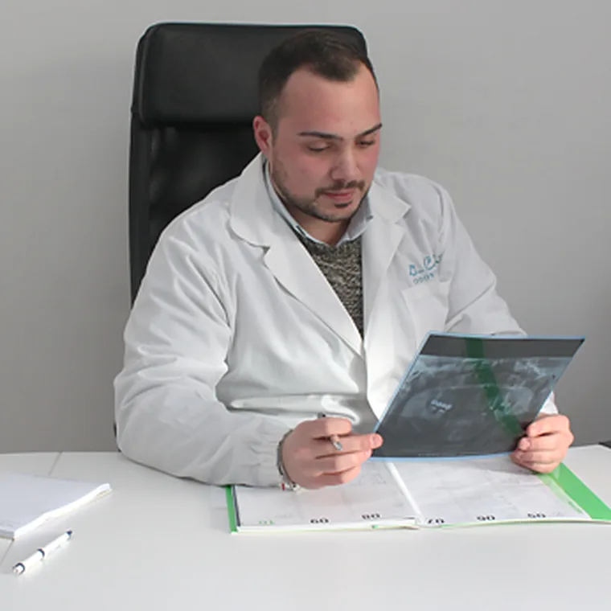
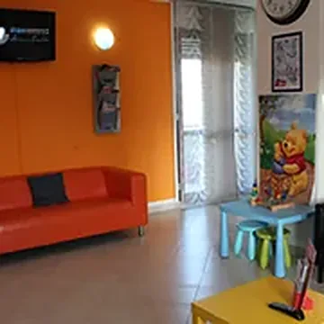
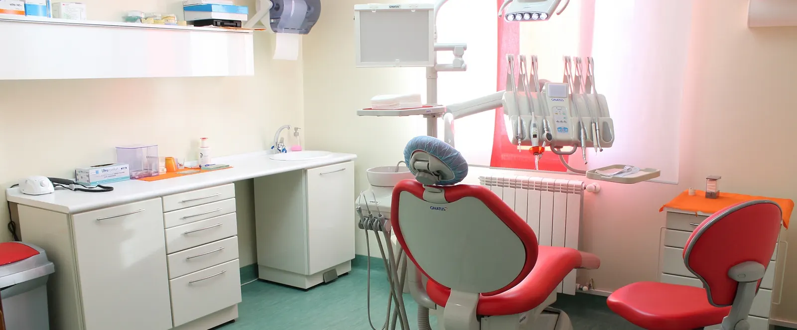
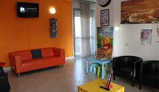
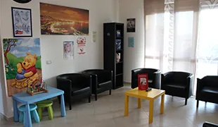
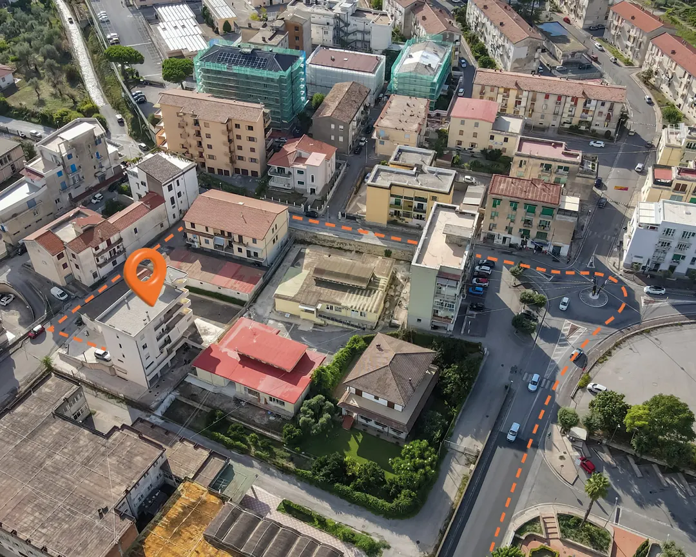
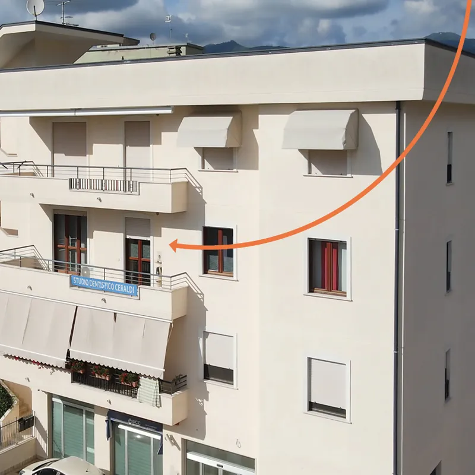

Il tuo dentista a Sessa Aurunca, dal 1989.
Lo studio del Dott. Giovanni Ceraldi in Viale Trieste: prevenzione, implantologia guidata, ortodonzia invisibile e cure per i bambini.
Si riceve solo su appuntamento

Dott. Giovanni CeraldiOdontoiatra
Conservare i tuoi denti il più a lungo possibile, con cure sempre meno invasive.

Lo studio ha una sola sede, in Viale Trieste a Sessa Aurunca. Nasce per proseguire l'attività del Dott. Elio Avagliano, medico chirurgo e odontoiatra sul territorio per oltre trent'anni.
Il Dott. Ceraldi segue la prevenzione e la cura delle malattie di denti e gengive, e i trattamenti per l'estetica del sorriso. L'obiettivo resta lo stesso dal 1989: salvare ciò che si può salvare, scegliendo la soluzione meno invasiva.
Lo studio investe in strumenti digitali e in aggiornamento continuo, perché una diagnosi precisa rende le cure più semplici e più comode.
Trattamenti
Dalla pulizia dei denti all'implantologia guidata al computer: tutte le cure si fanno in studio. Tocca un trattamento per saperne di più.
Prevenzione e igiene
Pulizia professionale, istruzioni per la cura a casa e controlli periodici. È il modo più semplice per accorgersi dei problemi prima che facciano male.
Conservativa
Cura delle carie con otturazioni del colore del dente, per eliminare il danno e mantenere la forma originale.
Endodonzia
La cosiddetta devitalizzazione: si pulisce e si sigilla l'interno di un dente colpito da carie profonde o traumi, per conservarlo invece di estrarlo.
Parodontologia
Diagnosi e cura di gengive e osso, i tessuti che sostengono i denti. Le gengive che sanguinano sono il primo segnale da non trascurare.
Implantologia classica
Radici artificiali in titanio sostituiscono i denti persi e sostengono protesi, preferibilmente fisse.
Implantologia guidata al computer
L'intervento si progetta prima in 3D, partendo dalle immagini radiografiche e dalla scansione della bocca. Una guida chirurgica porta l'impianto nella posizione pianificata, con incisioni ridotte.
Chirurgia orale
Estrazioni semplici e complesse, residui di radici, denti del giudizio e altri denti inclusi o semi-inclusi nell'osso.
Ortodonzia classica e invisibile
Apparecchi tradizionali o mascherine trasparenti su misura per raddrizzare i denti. Le mascherine si progettano dalla scansione digitale della bocca.
Pedodonzia
Cure per i più piccoli, dai primi dentini all'adolescenza. Un approccio pensato per il singolo bambino, perché si senta a suo agio e collabori.
Protesi fisse e mobili
Corone, ponti e protesi mobili personalizzate per sostituire i denti persi per carie, traumi o usura, e tornare a masticare e sorridere.
Sbiancamento dentale
Sbiancamento professionale in studio contro le macchie di caffè, tè e fumo, dopo una visita che verifica se è indicato per te.
Medicina estetica
Trattamenti per labbra armoniche e definite, eseguiti in studio.
Strumenti digitali, cure più comode.
-
Scanner intraorale 3D
Le impronte si prendono con una piccola telecamera, senza la pasta in bocca. Il modello dei tuoi denti compare subito a schermo.
-
Pianificazione 3D degli impianti
Ogni intervento di implantologia guidata si progetta al computer prima di entrare in sala.
-
Anestesia senza ago
Un sistema che anestetizza senza la classica siringa: una scelta in più per chi ha paura dell'iniezione.
-
Panoramica digitale in studio
La radiografia panoramica si esegue direttamente qui, senza spostarsi in un altro centro.
La prima visita
Serve a conoscerci e a capire di cosa hai bisogno. Ecco come si svolge.
-
Ascolto
Ci racconti fastidi, timori e cosa vorresti migliorare del tuo sorriso.
-
Esame completo
Il Dottore controlla denti, gengive e tessuti molli: guance, labbra e lingua. Se serve si aggiungono radiografie, impronte digitali e fotografie.
-
Piano di cura
Ricevi un piano funzionale ed estetico, costruito anche sulle tue possibilità economiche.
Lo studio, dentro.



Orari
Si riceve solo su appuntamento.
| Lunedì | 15:00 – 18:30 |
|---|---|
| Martedì | 9:30 – 12:45 |
| Mercoledì | 15:00 – 18:30 |
| Giovedì | Chiuso |
| Venerdì | Chiuso |
| Sabato | Chiuso |
| Domenica | Chiuso |
Dove siamo
Arrivare allo studio è facile: ecco il percorso e il palazzo da riconoscere.


Viale Trieste snc
81037 Sessa Aurunca (CE)
La mappa è fornita da Google: caricandola, Google riceve alcuni dati di navigazione.